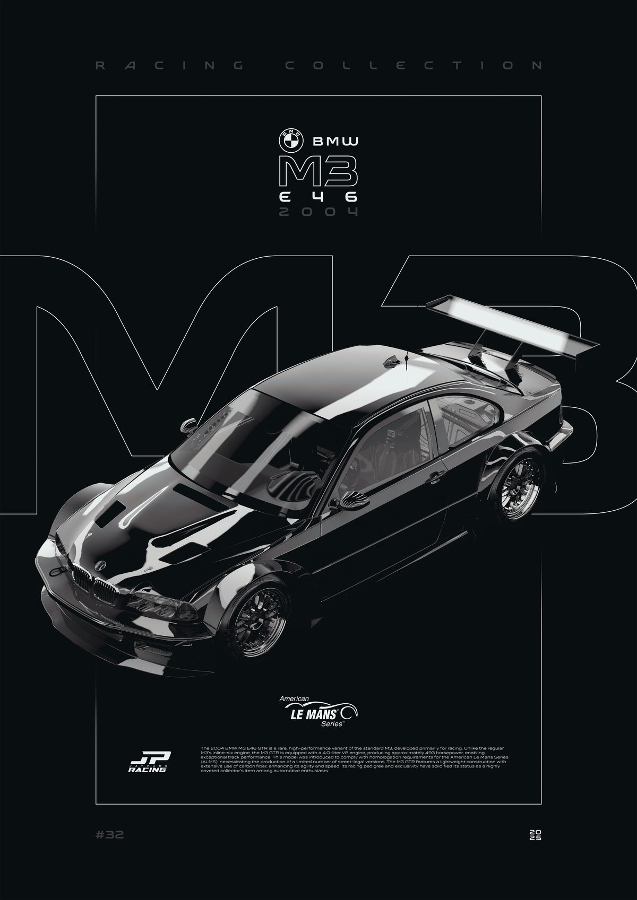
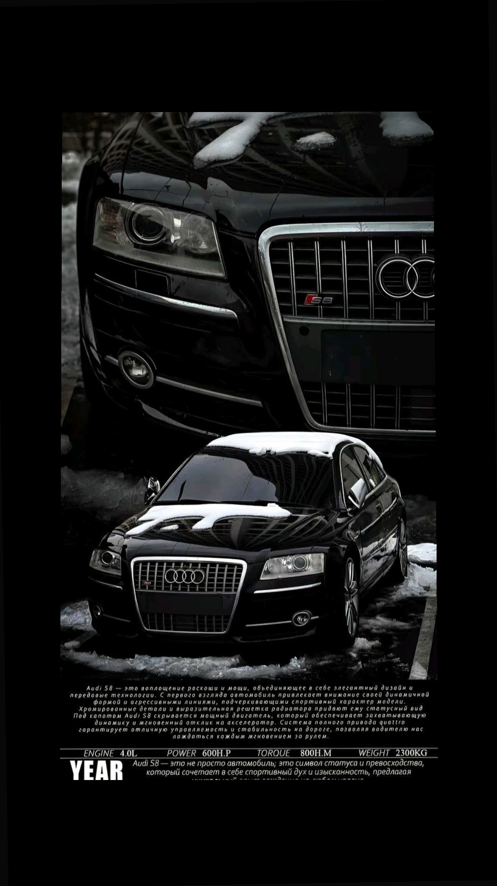
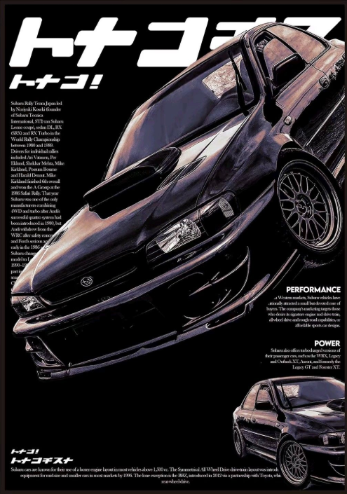
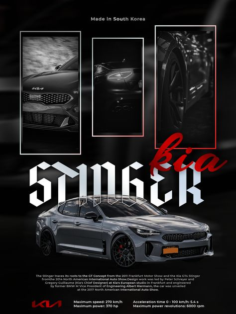
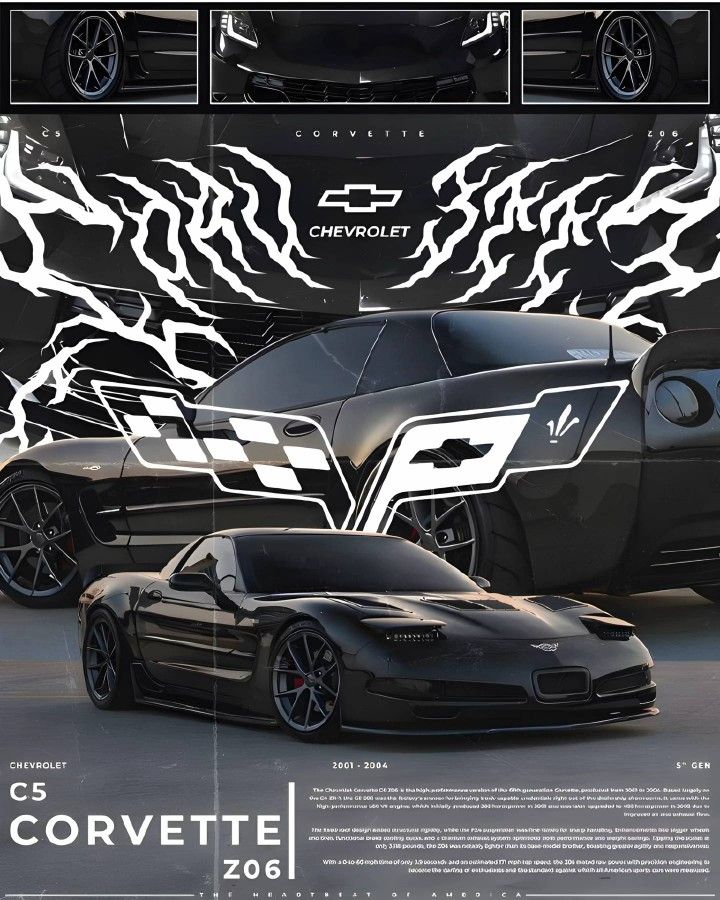

Автомобили
Меня всегда привлекал автомобильный дизайн и инженерия. От рева классических V8 до изящных линий современных суперкаров — автомобили для меня больше, чем просто машины. Это искусство, технология и свобода.
классика · спорт

Избранные модели

Audi S8 D3
Флагманский седан с алюминиевым кузовом и атмосферным V10 5.2 л (450 л.с.) от Lamborghini Gallardo. Полный привод, спортивный характер и незаметная внешность — идеальный «волк в овечьей шкуре».

Subaru Impreza
Первое поколение Impreza (1992–2000) положило начало легенде. Оппозитный турбомотор, полный привод и успехи в ралли сделали её иконой. Версии WRX STI до сих пор считаются эталоном «заряженных» компактных седанов.

Kia Stinger
Первый заднеприводный гран-турер корейского бренда. Версия GT оснащалась 3.3-литровым V6 twin-turbo (370 л.с.) и 8-ступенчатым автоматом. Стремительный силуэт, отличная управляемость и практичность сделали Stinger достойным конкурентом европейским аналогам.

Chevrolet Corvette C5
Легендарный американский спорткар с двигателем LS1 V8 и трансмиссией «transaxle». Улучшенная жёсткость кузова, лёгкость и культовый дизайн — чистый драйв без компромиссов.
«Автомобиль — это не роскошь, а средство передвижения к мечте»